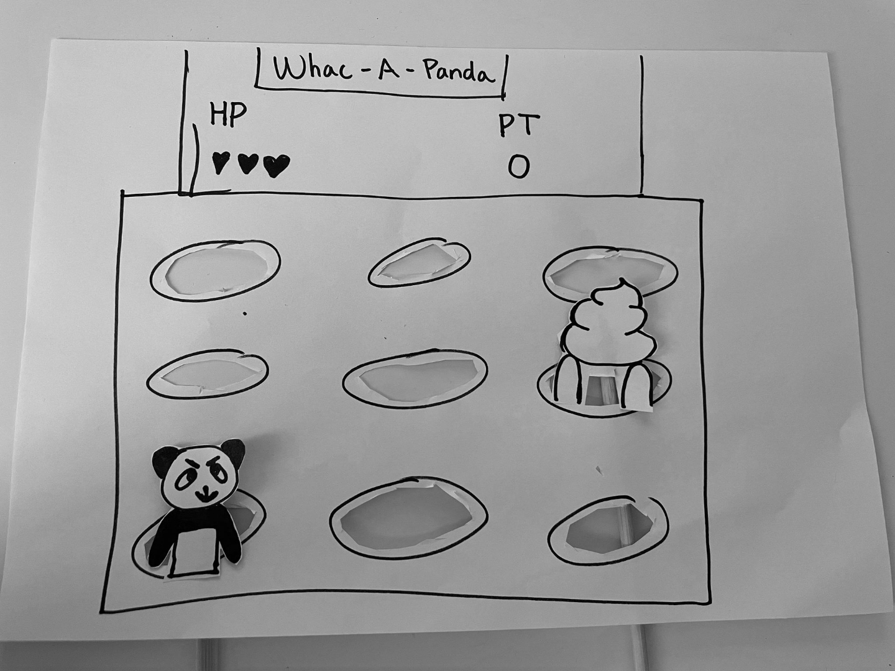
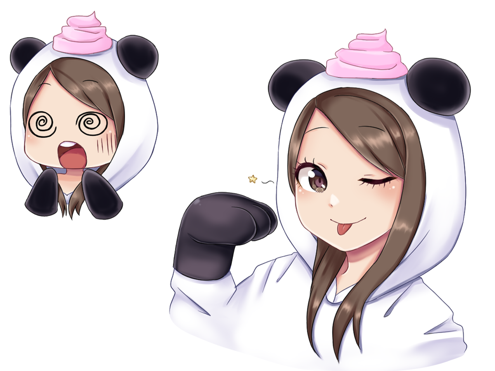

The idea
My game is inspired by the classic arcade game Whac-A-Mole. It is a game where moles come up from different holes and you have to whack them to earn points
Paper Prototype
I decided to put my own twist on it and I added pandas instead of moles
Early idea:
Inspiration
The pandas and poops are a reference to my online gamer name/persona "PandaPoob".
My online persona:
